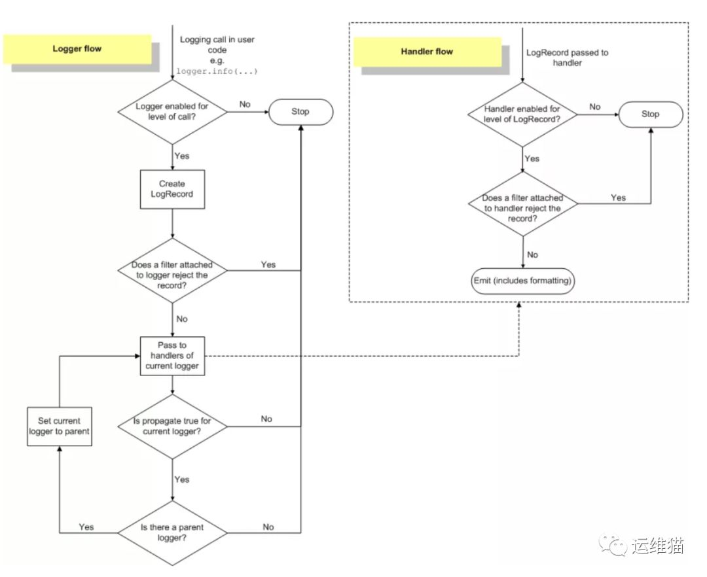
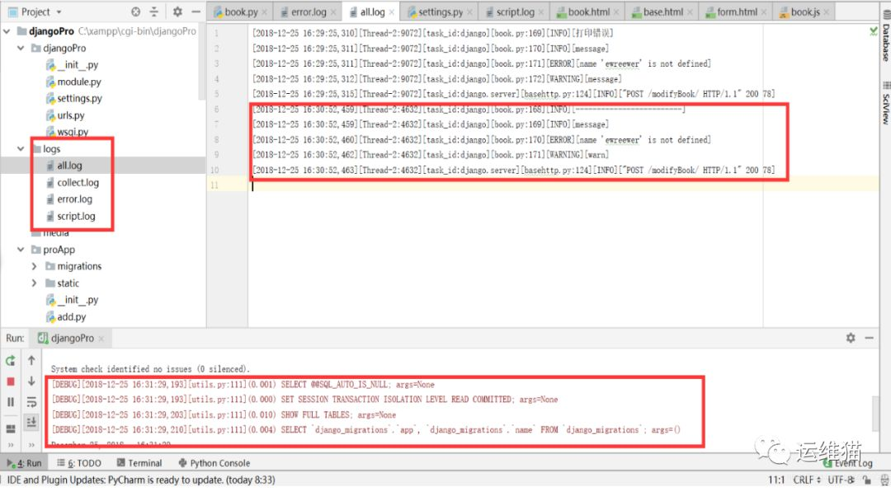

简介
日志是一种可以追踪某些软件运行时所发生事件的方法。软件开发人员可以向他们的代码中调用日志记录相关的方法来表明发生了某些事情。一个事件可以用一个可包含可选变量数据的消息来描述。此外，事件也有重要性的概念，这个重要性也可以被称为严重性级别（level）。
作用
通过log的分析，可以方便用户了解系统或软件、应用的运行情况；如果你的应用log足够丰富，也可以分析以往用户的操作行为、类型喜好、地域分布或其他更多信息；如果一个应用的log同时也分了多个级别，那么可以很轻易地分析得到该应用的健康状况，及时发现问题并快速定位、解决问题，补救损失。
简单来讲就是，我们通过记录和分析日志可以了解一个系统或软件程序运行情况是否正常，也可以在应用程序出现故障时快速定位问题。比如，做运维的同学，在接收到报警或各种问题反馈后，进行问题排查时通常都会先去看各种日志，大部分问题都可以在日志中找到答案。再比如，做开发的同学，可以通过IDE控制台上输出的各种日志进行程序调试。对于运维老司机或者有经验的开发人员，可以快速的通过日志定位到问题的根源。可见，日志的重要性不可小觑。日志的作用可以简单总结为以下3点：
- 程序调试
- 了解软件程序运行情况，是否正常
- 软件程序运行故障分析与问题定位
如果应用的日志信息足够详细和丰富，还可以用来做用户行为分析，如：分析用户的操作行为、类型洗好、地域分布以及其它更多的信息，由此可以实现改进业务、提高商业利益。
Logging工作流程
logging模块使用过程
1.第一次导入logging模块或使用reload函数重新导入logging模块，logging模块中的代码将被执行，这个过程中将产生logging日志系统的默认配置。
2.自定义配置(可选)。logging标准模块支持三种配置方式: dictConfig，fileConfig，listen。其中，dictConfig是通过一个字典进行配置Logger，Handler，Filter，Formatter；fileConfig则是通过一个文件进行配置；而listen则监听一个网络端口，通过接收网络数据来进行配置。当然，除了以上集体化配置外，也可以直接调用Logger，Handler等对象中的方法在代码中来显式配置。
3.使用logging模块的全局作用域中的getLogger函数来得到一个Logger对象实例(其参数即是一个字符串，表示Logger对象实例的名字，即通过该名字来得到相应的Logger对象实例)。
4.使用Logger对象中的debug，info，error，warn，critical等方法记录日志信息。
logging模块处理流程

1.判断日志的等级是否大于Logger对象的等级，如果大于，则往下执行，否则，流程结束。
2.产生日志。第一步，判断是否有异常，如果有，则添加异常信息。第二步，处理日志记录方法(如debug，info等)中的占位符，即一般的字符串格式化处理。
3.使用注册到Logger对象中的Filters进行过滤。如果有多个过滤器，则依次过滤；只要有一个过滤器返回假，则过滤结束，且该日志信息将丢弃，不再处理，而处理流程也至此结束。否则，处理流程往下执行。
4.在当前Logger对象中查找Handlers，如果找不到任何Handler，则往上到该Logger对象的父Logger中查找；如果找到一个或多个Handler，则依次用Handler来处理日志信息。但在每个Handler处理日志信息过程中，会首先判断日志信息的等级是否大于该Handler的等级，如果大于，则往下执行(由Logger对象进入Handler对象中)，否则，处理流程结束。
5.执行Handler对象中的filter方法，该方法会依次执行注册到该Handler对象中的Filter。如果有一个Filter判断该日志信息为假，则此后的所有Filter都不再执行，而直接将该日志信息丢弃，处理流程结束。
6.使用Formatter类格式化最终的输出结果。 注：Formatter同上述第2步的字符串格式化不同，它会添加额外的信息，比如日志产生的时间，产生日志的源代码所在的源文件的路径等等。
7.真正地输出日志信息(到网络，文件，终端，邮件等)。至于输出到哪个目的地，由Handler的种类来决定。
日志等级
1 | 级别 日志函数 描述 |
日志格式允许的字段
1 | 格式 描述 |
简单应用
1 | import logging |
可见，默认情况下Python的logging模块将日志打印到了标准输出中，且只显示了大于等于WARNING级别的日志，这说明默认的日志级别设置为WARNING（日志级别等级CRITICAL > ERROR > WARNING > INFO > DEBUG > NOTSET）
基本用法
1 | # ! /usr/bin/python |
灵活配置日志格式（多次运行会被覆盖）
1 | import logging |
1 | [root@RedHat_test log]# cat test.log |
logging库Formatter组件
1 | #!/bin/python |
创建两个logger对象
1 | # ! /usr/bin/python |
1 | [root@RedHat_test log]# cat test.log |
写入配置文件
定义一个 yaml 配置文件
1 | # 文件名：config.yaml |
定义一个主入口文件
1 | # 文件名：main.py |
这个模块还引入了另外一个模块 core
1 | # 文件名：core.py |
控制台运行结果输出
1 | 2018-06-03 17:07:12,727 - Exec |
在 debug.log 文件中则包含了 core.py 的运行结果
1 | 2018-06-03 17:07:12,727 - main.core - INFO - Core Info |
对logging模块进行封装
创建目录
1 | [root@RedHat_test log]# ls |
展现代码
1 | # log.py |
1 | # main.py |
展示效果
1 | [root@RedHat_test bin]# python main.py |
Django中的日志配置
Django的日志在/your_project_name/settings.py文件中配置
1 | # log 首先创建日志存储路径. |
此配置的三个部分
formatters: 指定输出的格式，被handler使用。
handlers： 指定输出到控制台还是文件中，以及输出的方式。被logger引用。
loggers： 指定django中的每个模块使用哪个handlers。以及日志输出的级别。
注意：日志的输出级别是由loggers中的每个模块中level选项定义。如果没有配置，那么默认为warning级别。
1 | handlers与loggers都存在level，两者不同： |
使用
1 | import logging |
效果图


...
...
This is copyright.